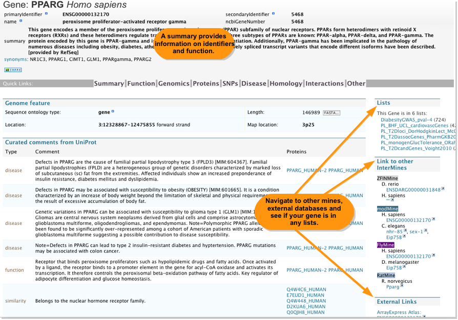

A search box appears in the menu bar of all pages as well as on the home page. You can search for any identifier or symbol for Genes, Proteins, transcripts and so on. You can use '*' as a wildcard.
Run a search for the Human Gene PPARG:
Select the Human PPARG gene (second result) from the set of results. The report page shows information from many data sources in one place. There are corresponding pages for all objects in metabolicMine. A set of 'Quick links' at the top of the page allow you to navigate to specific information more easily:
Report pages include summary tables of information, many of which can be expanded to give more extensive information, links to report pages for related objects and links to other mines and external databases.

Many report pages include interactive viewers allowing detailed analysis of certain data:
![[Report Viewers]](mmRP_Viewers_dec2011.png)
Report pages also include the results for a number of our stored 'Template searches' which are automatically run when the page is loaded. The results can be expanded and collapsed, or if the number of results is large, viewed in a table.
![[object details Templates]](mmRP_Template_dec2011.png)